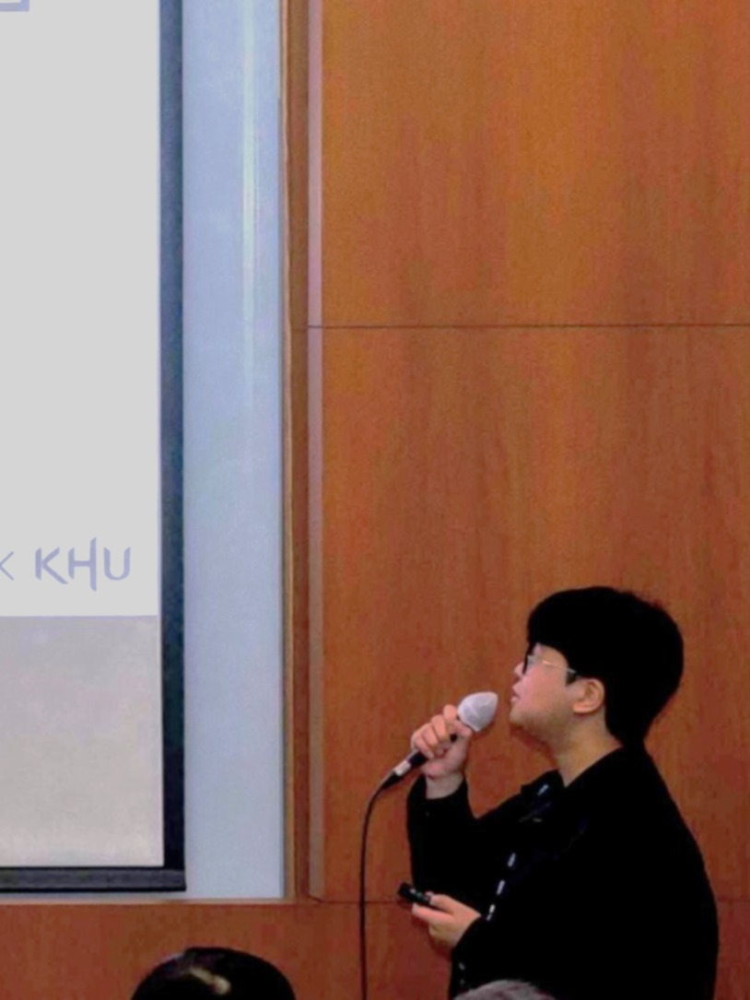

Haeun Ji
About Me

- I am a Synchronized Multi-Camera Systems Engineer at Affordance, a Human-Robot Interaction startup.
- My academic background is in Electronic Engineering, with a primary focus on Chip Design using Open-Source EDA.
- My research interests lie in Hardware for Autonomous Robotics.
Experience & Education
- Affordance, Seoul, Korea Synchronized Multi-Camera Systems Engineer, Human-Robot Interaction startup (2026.09 - current)
- Automated Engineering and Research (AER), Seoul, Korea FPGA/ASIC Engineer, Robotics Semiconductor & AI Automation startup (2026.06 - 2026.08)
- Seoul National University, Seoul, Korea Research Intern at the Autonomous Robot Intelligence Lab (ARIL) (2025.12 - 2026.06)
- Kyung Hee University, Yongin, Korea B.S. in Electronic Engineering (2019.03 - 2025.02)
- Republic of Korea Army, Central Frontline DMZ Frontline Guard Post Military Police, Sergeant, Honorably Discharged (2020.07 - 2022.01)
Research Interests
- Hardware for Autonomous Robotics
- Chip Design using Open-Source EDA
Honors & Awards
- 1st Place, Sponsored by AMD (2026.09) Agentic FPGA Backend Optimization Competition at FPL'26 · Ghent, Belgium
- Grand Prize, Minister's Award (Deputy Prime Minister and Minister of Science and ICT) (2025.11) 2025 My Chip Design Competition, 12-bit CORDIC-based NCO (Silicon Proven) · Gwangju, Korea
- Grand Prize, Dean's Award (College of Electronics and Information Engineering, Kyung Hee University) (2023.01) Capstone Design, Alcohol Sensing-Based Ignition Interlock System · Yongin, Korea
- Commander's Commendation (6th Infantry Division Commander, Republic of Korea Army) (2020.09) Basic military training, awarded to the top 5 recruits for outstanding performance · Cheorwon, Korea
Publications
- 12-bit CORDIC-based NCO, "My Chip" Design, Fabrication and Test IEIE 2025 (Domestic). Designed and tested a 12-bit NCO using the ETRI 500nm process.
- ETRI 0.5㎛ Process-based 4-bit Booth's Multiplier Design and Chip Test IEIE 2024 (Domestic), Oral presentation. Designed and tested a Booth's multiplier using the ETRI 500nm process.
Projects
- Agentic Backend Optimization System for FPGA Developed an LLM-driven agentic system that analyzes FPGA design checkpoints (DCPs) to select and execute optimization strategies.
- Synchronized Multi-Camera System Developed a synchronized multi-camera system for human-robot interaction data collection. Used PTP for clock synchronization and external trigger pins to synchronize image capture.
- MPW (TinyTapeout 180nm, Fabrication in Progress): Robotic Reflex Chip for the PiPer Robotic Arm Developed the chip using an FPGA-based hardware-in-the-loop simulation (HILS) setup integrated with Gazebo, and submitted the ASIC design for fabrication through TinyTapeout.
-
MPW (ETRI 500nm, Silicon Proven): 12-bit CORDIC-based NCO (Numerically Controlled Oscillator)Designed and verified an NCO using the CORDIC algorithm to generate sinusoidal waveforms, optimized under I/O pad and area limitations. Open-Source EDA-based design, taped out via the My Chip Service (2025 1st Shuttle).
 12-bit CORDIC-based NCO System PCB
12-bit CORDIC-based NCO System PCB
 Sub1: Phase Accumulator
Sub1: Phase Accumulator Sub2: CORDIC Element
Sub2: CORDIC Element Sub3: Output Terminal
Sub3: Output Terminal -
MPW (ETRI 500nm, Fabricated): 8-bit FIR Filter Processing ElementDeveloped a Processing Element (PE) for Finite Impulse Response (FIR) filtering applications, optimized under I/O pad and area limitations. Open-Source EDA-based design, taped out via the My Chip Service (2024 2nd Shuttle).
 FIR Processing Element
FIR Processing Element
-
MPW (ETRI 500nm, Fabricated): 4-bit Booth's Algorithm MultiplierImplemented a hardware multiplier based on Booth's encoding to reduce the number of partial products. The first chip to use a custom ETRI 500nm standard cell library. Open-Source EDA-based design, taped out via the My Chip Service (2023 1st Shuttle).
 Booth's Multiplier
Booth's Multiplier
- Embedded System: Alcohol Sensing-Based Ignition Interlock System Developed an alcohol-based ignition locking mechanism that prevents vehicle startup by physical keyhole restriction.
Extracurricular Activities
- Panelist: 2024 Presidential Town Hall Meeting Selected as a student representative to provide feedback on the "My Chip Service".
Skills & Languages
- Programming / HDL: SystemC, Verilog, Python, Tcl/Tk
- Tools: Yosys, Verilator, Synopsys Design Compiler, Cadence Virtuoso, ModelSim, Vivado, Quartus
- English: TEPS 361, OPIc IH
Contact
- Email: haeun.josue@gmail.com
- LinkedIn: 지하은-학생-전자정보대학-전자공학과
- GitHub: github.com/haeun-josue
- Blog: dream-ee-master.tistory.com